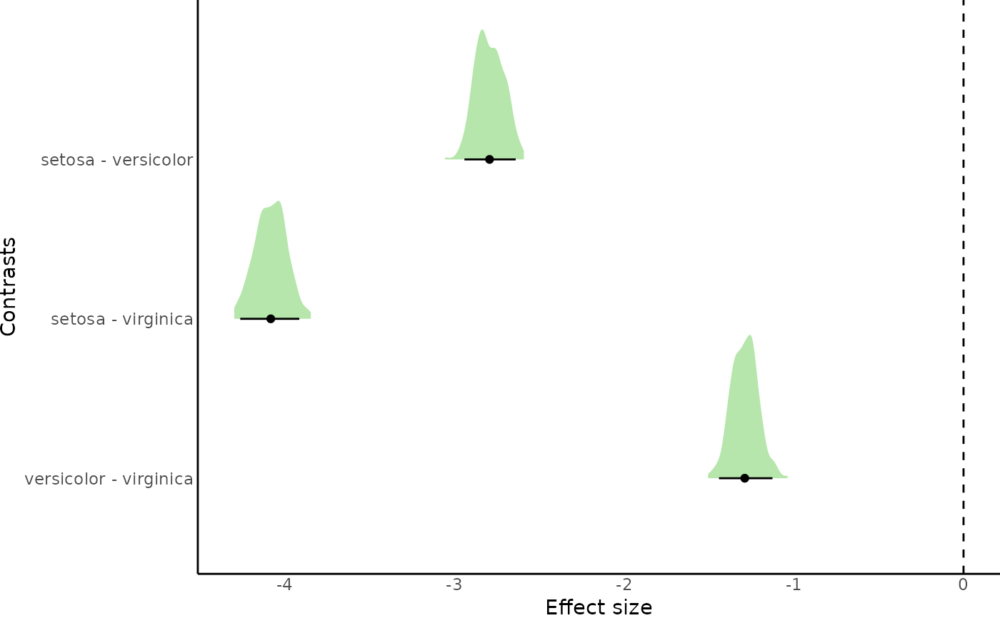

contrasts estimates hypothesis testing for all pairwise comparisons of a predictor in brmsfit object.
contrasts(fit = NULL, predictor, level.sep = " - ", xlab = "Effect size",
gsub.pattern = NULL, gsub.replacement = NULL, n.posterior = 2000,
fill = "#6DCD59FF", sort.levels = NULL, html.table = FALSE,
read.file = NULL, plot = FALSE, plot.area.prop = 1, highlight = FALSE)A brmsfit object.
The name of the categorical predictor in the model fit for which contrasts will be computed.
A character string to separate the levels in the output.
A character string with the horizontal axis label. Default is "Effect size".
A vector with character strings to be replaced
A vector with character strings to use for replacement.
Number of posterior samples to use for plotting. Default is 2000.
Color for posterior distribution fill. Default is "#6DCD59FF".
Character vector with the order to be used for levels in the predictor.
Logical to control whether estimate tables are plotted in html format. Useful for creating Rmd or quarto html reports. Is FALSE (default) the table is return as a data frame object.
Character string with the name of the .rds file containing the model fit.
Logical to control if posterior distributions of estimates are plotted. Default is FALSE.
Positive number to control de proportion of the plotting area of posterior distributions that will be included. Default is 1 (the default area included by ggplot). Useful for adding or removing empty space around distributions.
Logical to control if posterior estimates for which the 95% credible intervals do not overlap with zero are highlighted. Default is FALSE.
If plot = TRUE the function returns a ggplot object with the posterior distributions of the comparisons between predictor levels. If html = FALSE the function will return a data frame with estimates for each comparison, otherwise it will print the estimates in a table in html format.
Estimates hypothesis testing for all pairwise comparisons of levels from a categorical predictor. The function hypothesis is used internally.
Araya-Salas (2022), brmsish: miscellaneous functions to customize brms bayesian regression models. R package version 1.0.0.Paul-Christian Buerkner (2017). brms: An R Package for Bayesian Multilevel Models Using Stan. Journal of Statistical Software, 80(1), 1-28. doi:10.18637/jss.v080.i01
{
# run model
mod <- brm(Petal.Length ~ Species, iris, chains = 1, iter = 500)
# compute constrasts with plot
contrasts(fit = mod, predictor = "Species", html.table = TRUE, plot = TRUE)
# compute constrasts without plot
contrasts(fit = mod, predictor = "Species", html.table = TRUE, plot = FALSE)
}
#> Compiling Stan program...
#> Start sampling
#>
#> SAMPLING FOR MODEL '0b59cc4e3935f086e2dde5c84040063f' NOW (CHAIN 1).
#> Chain 1:
#> Chain 1: Gradient evaluation took 1e-05 seconds
#> Chain 1: 1000 transitions using 10 leapfrog steps per transition would take 0.1 seconds.
#> Chain 1: Adjust your expectations accordingly!
#> Chain 1:
#> Chain 1:
#> Chain 1: Iteration: 1 / 500 [ 0%] (Warmup)
#> Chain 1: Iteration: 50 / 500 [ 10%] (Warmup)
#> Chain 1: Iteration: 100 / 500 [ 20%] (Warmup)
#> Chain 1: Iteration: 150 / 500 [ 30%] (Warmup)
#> Chain 1: Iteration: 200 / 500 [ 40%] (Warmup)
#> Chain 1: Iteration: 250 / 500 [ 50%] (Warmup)
#> Chain 1: Iteration: 251 / 500 [ 50%] (Sampling)
#> Chain 1: Iteration: 300 / 500 [ 60%] (Sampling)
#> Chain 1: Iteration: 350 / 500 [ 70%] (Sampling)
#> Chain 1: Iteration: 400 / 500 [ 80%] (Sampling)
#> Chain 1: Iteration: 450 / 500 [ 90%] (Sampling)
#> Chain 1: Iteration: 500 / 500 [100%] (Sampling)
#> Chain 1:
#> Chain 1: Elapsed Time: 0.00764 seconds (Warm-up)
#> Chain 1: 0.005468 seconds (Sampling)
#> Chain 1: 0.013108 seconds (Total)
#> Chain 1:
#> Warning: Bulk Effective Samples Size (ESS) is too low, indicating posterior means and medians may be unreliable.
#> Running the chains for more iterations may help. See
#> https://mc-stan.org/misc/warnings.html#bulk-ess
#> <table class="table table-striped table-hover table-condensed table-responsive" style="font-size: 12px; width: auto !important; margin-left: auto; margin-right: auto;">
#> <thead>
#> <tr>
#> <th style="text-align:left;"> </th>
#> <th style="text-align:left;"> Hypothesis </th>
#> <th style="text-align:right;"> Estimate </th>
#> <th style="text-align:right;"> Est.Error </th>
#> <th style="text-align:right;"> l-95% CI </th>
#> <th style="text-align:right;"> u-95% CI </th>
#> </tr>
#> </thead>
#> <tbody>
#> <tr>
#> <td style="text-align:left;"> 1 </td>
#> <td style="text-align:left;"> setosa - versicolor </td>
#> <td style="text-align:right;"> -2.795 </td>
#> <td style="text-align:right;"> 0.084 </td>
#> <td style="text-align:right;"> -2.646 </td>
#> <td style="text-align:right;"> -2.977 </td>
#> </tr>
#> <tr>
#> <td style="text-align:left;"> 2 </td>
#> <td style="text-align:left;"> setosa - virginica </td>
#> <td style="text-align:right;"> -4.087 </td>
#> <td style="text-align:right;"> 0.082 </td>
#> <td style="text-align:right;"> -3.928 </td>
#> <td style="text-align:right;"> -4.259 </td>
#> </tr>
#> <tr>
#> <td style="text-align:left;"> 3 </td>
#> <td style="text-align:left;"> versicolor - virginica </td>
#> <td style="text-align:right;"> -1.292 </td>
#> <td style="text-align:right;"> 0.081 </td>
#> <td style="text-align:right;"> -1.452 </td>
#> <td style="text-align:right;"> -1.139 </td>
#> </tr>
#> </tbody>
#> </table>

#> <table class="table table-striped table-hover table-condensed table-responsive" style="font-size: 12px; width: auto !important; margin-left: auto; margin-right: auto;">
#> <thead>
#> <tr>
#> <th style="text-align:left;"> </th>
#> <th style="text-align:left;"> Hypothesis </th>
#> <th style="text-align:right;"> Estimate </th>
#> <th style="text-align:right;"> Est.Error </th>
#> <th style="text-align:right;"> l-95% CI </th>
#> <th style="text-align:right;"> u-95% CI </th>
#> </tr>
#> </thead>
#> <tbody>
#> <tr>
#> <td style="text-align:left;"> 1 </td>
#> <td style="text-align:left;"> setosa - versicolor </td>
#> <td style="text-align:right;"> -2.795 </td>
#> <td style="text-align:right;"> 0.084 </td>
#> <td style="text-align:right;"> -2.646 </td>
#> <td style="text-align:right;"> -2.977 </td>
#> </tr>
#> <tr>
#> <td style="text-align:left;"> 2 </td>
#> <td style="text-align:left;"> setosa - virginica </td>
#> <td style="text-align:right;"> -4.087 </td>
#> <td style="text-align:right;"> 0.082 </td>
#> <td style="text-align:right;"> -3.928 </td>
#> <td style="text-align:right;"> -4.259 </td>
#> </tr>
#> <tr>
#> <td style="text-align:left;"> 3 </td>
#> <td style="text-align:left;"> versicolor - virginica </td>
#> <td style="text-align:right;"> -1.292 </td>
#> <td style="text-align:right;"> 0.081 </td>
#> <td style="text-align:right;"> -1.452 </td>
#> <td style="text-align:right;"> -1.139 </td>
#> </tr>
#> </tbody>
#> </table>